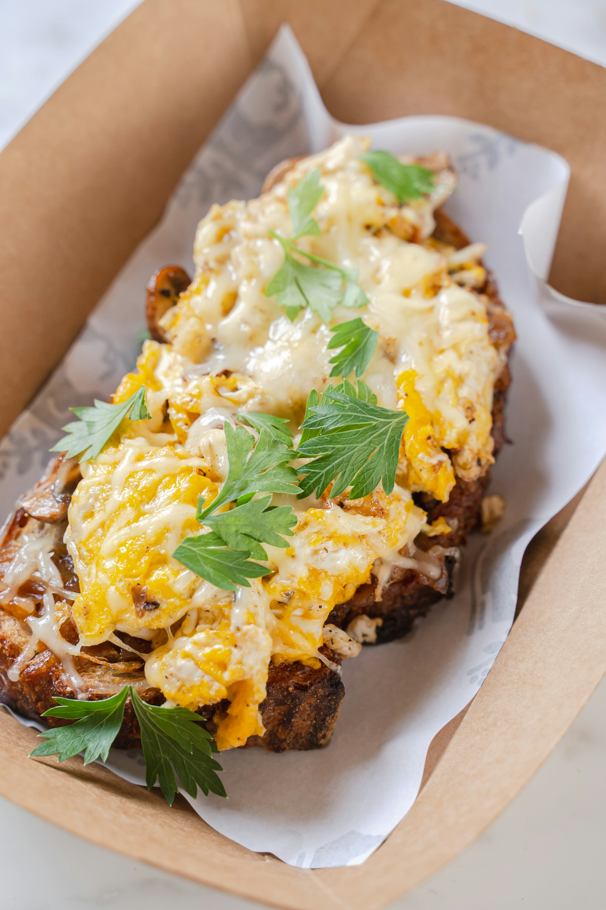

Golden, ripe plantains baked or fried until tender and caramelized, then topped with melted cheese for a delicious combination of sweet and savory flavors. This simple and satisfying dish makes a great snack, side dish, or light meal.